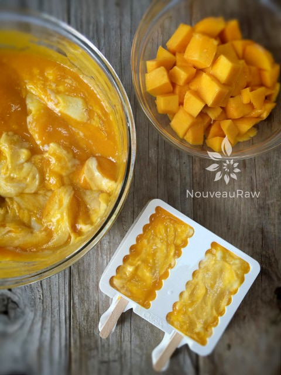
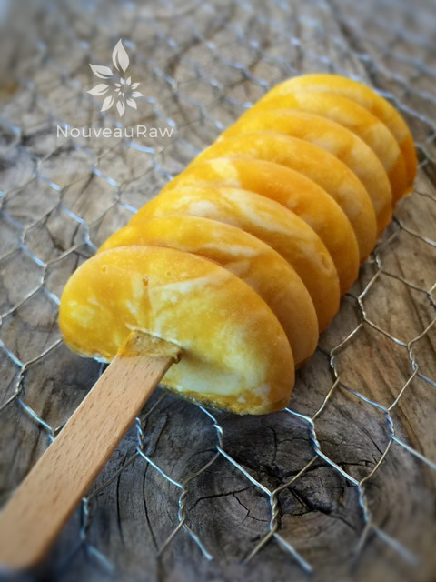
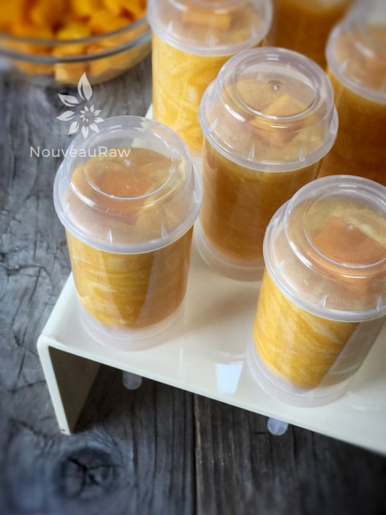

Mango Coconut Cream Popsicles

~ raw, vegan, gluten-free, nut-free ~
Abundant sunshine and an invigorating breeze whispering through the house inspired me to create this recipe. It was that or clean the house… the popsicles won!
Mango and coconut are just one of the great flavor combinations that work together when making a soothing, frozen treat for the warm summer months. Though I really don’t like to put timeframe restrictions on them, because I find sweet frozen treats to be a delight even in the cooler months.
This recipe can be enjoyed right after the blending process. With the aid of a blender, you will soon discover that both mangos and Young Thai Coconuts transform into luscious cream-like puddings. In fact, put a bowl aside for tomorrow’s breakfast and then move forward in making popsicles.
For the best tasting popsicles, you need to start off with the best-tasting mangos. That means that you want to select beautifully ripened mangos. There is a “sweet spot” of perfection. If they are a bit under-ripe, they will taste sour and have a fibrous flesh. Over-ripe mangos often have a soapy or fermented taste.
Mangos are ready to eat when they are slightly soft to the touch at the stem end and yield to gentle pressure, like a ripe peach. Avoid mangos with black spots. You can ripen them at room temperature in a paper bag, along with an apple or a banana.
The next tropical ingredient that we will be using is young Thai coconut flesh/meat. If for some reason you can’t get your patties on these wonderful jewels, you can use canned. Please look for organic, BPA-free, full-fat coconut milk. You will want to chill the can overnight, so that the coconut separates inside the can. Once opened you will have a super thick cream (which is what you will use) and a thin liquid (save for tomorrow morning’s smoothie). You will need roughly 3 cans.
I really should let you go now… it’s time to play in the kitchen, make a mess, and then reap the rewards!
- 2 large ripe mangos (= 2 1/2 cup puree)
- 1 lb Young Thai coconut meat
- 1/4 cup maple syrup
- 1 Tbsp water
Preparation:
- Peel the skin and remove the seed from the mango and blend to a puree. Pour into a mixing bowl.
- Blend the coconut meat, maple syrup, and water, until the mixture is completely smooth and creamy.
- If you want to cut out the added sugar, you can use stevia. Add a tiny bit and build up the flavor to your liking. Keep in mind that the sweetness decreases when frozen due to the coldness numbing the taste buds so use a little more than you might expect.
- Also, sweeteners may not need to be added if the mango is really sweet and ripe. Please taste test as you go.
- You have a few options here regarding popsicle design:
- Create a mild swirl effect (as I did). Mix the coconut puree and the mango puree, gently folding them together. Fill up the molds, add the sticks, and freeze overnight.
- Create defined layers of flavors. Fill the molds about 1/4 of the way full and transfer to the freezer for 1 hour. At the 1-hour mark, remove them from the freezer and add a tablespoon of the opposite flavor to each mold. Place back in the freezer for another hour and repeat the process until you’ve filled up the molds.
- Create a blotchy swirl effect. You can add each puree to the molds, alternating between the two. An automatic swirl will happen with the popsicles, resulting in some very attractive popsicles.
- Place the molds in the freezer overnight to harden.
- Enjoy within a month.
Freezing Suggestions for Ice Cream:
-
Freeze in popsicle molds or 3 oz Dixie cups with a popsicle stick inserted.
-
-
Store the ice cream in the very back of the freezer, as far away from the door as possible. Every time you open your freezer door you let in warm air. Keeping ice cream way in the back and storing it beneath other frozen-sold items will help protect it from those steamy incursions.
-
Wish to make your own raw ice cream, wonder what machine I might recommend, and more? Click (
here) to check out the Reference Library!

Regardless of the popsicle mold that you use… combine both batters in a bowl, swirling them together just enough so you can see the variation. I overdid it a tad on mine, but they still turned out pretty.


© AmieSue.com